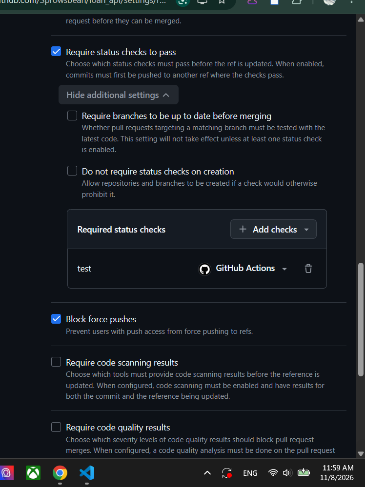
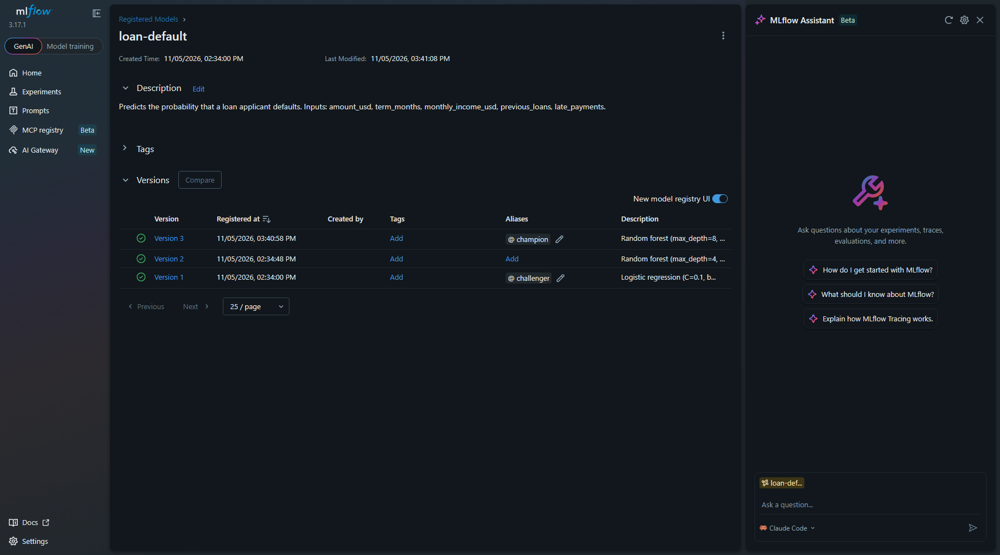
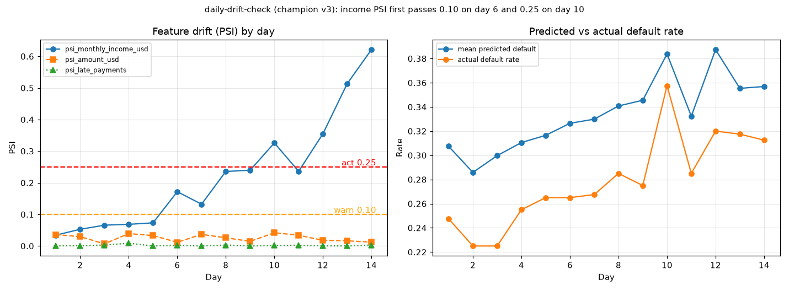
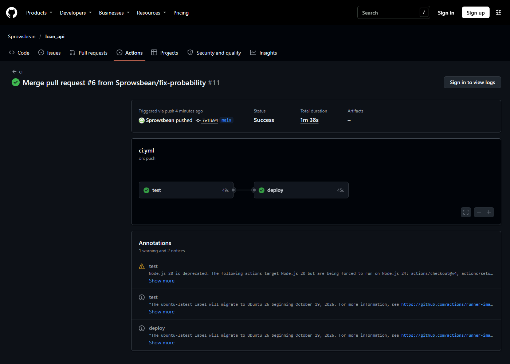
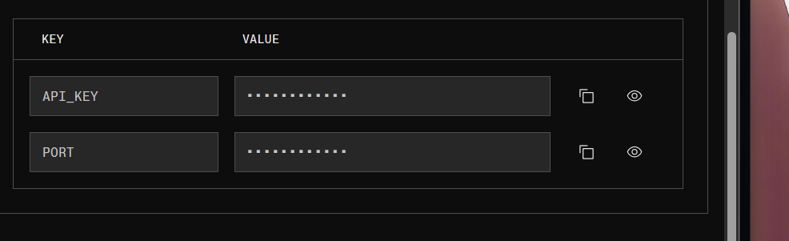
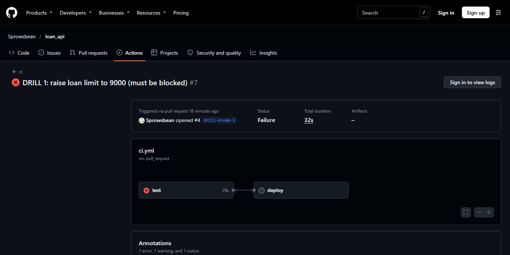
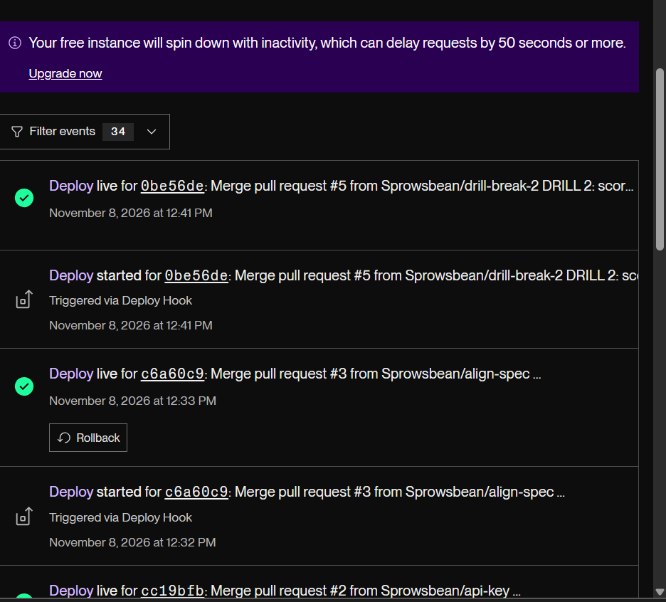
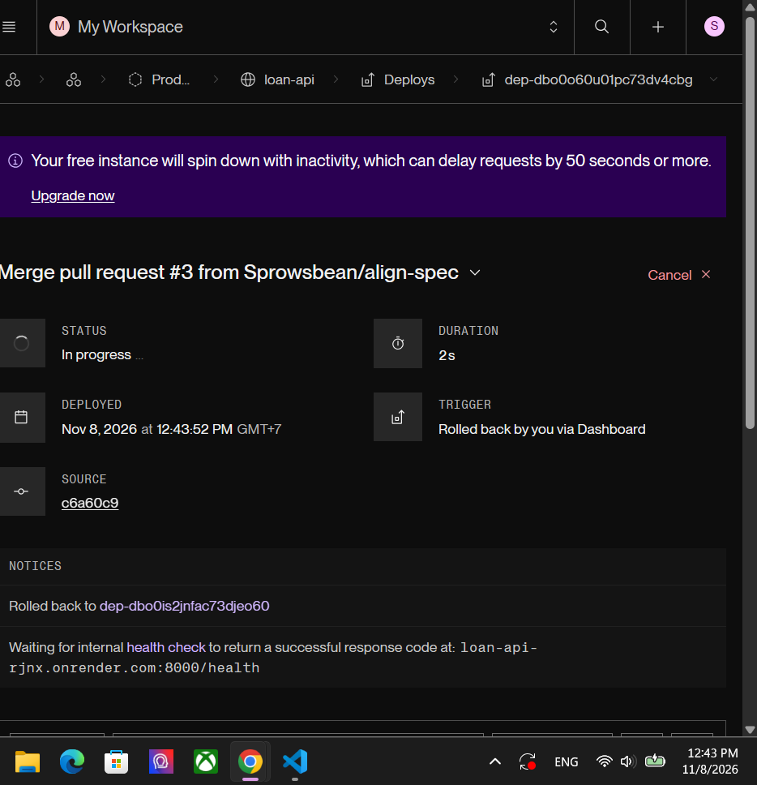
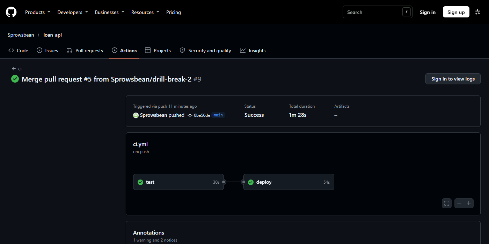

| Requirement | Evidence | Section |
|---|---|---|
CI green on main; branch rule requires test | Five green main runs; ruleset protect-main active with required check test | 1 |
Live /openapi.json compared with the Module 2 specification | Endpoint-by-endpoint table, matches and deliberate changes | 2 |
| Model lifecycle: runs, champion, promotion memo, drift chart, alert plan | Six tracked runs, registry v3 champion, memo, drift chart, thresholds | 3 |
Real improvement shipped through a pull request: pipeline graph, verify log, live /health SHA, merge-to-live time | PRs #2, #3 and #6; graph, verify log; five deploy timings (73 to 99 s) | 4 |
| Three API-key checks and SSL Labs grade | curl outputs; certificate details; SSL Labs result | 5 |
| Bad release drill with a new test; both timings | PR #4 blocked, PR #5 reached production, rollback, PR #6 with tests; 88 s and about 36 s | 6 |
| Deployed only by the pipeline; no secrets in repo, images or logs | Deploy hook flow, Render auto-deploy off, secrets scan | 4 and 5 |
The workflow .github/workflows/ci.yml has two jobs. test runs on every pull request and every push to main (install, python train.py, pytest -v). deploy runs only on main, after test passes. Pull requests are tested and never deployed.
| Run | Commit | Result |
|---|---|---|
| #1 ci-pipeline | eab62fa | success |
| #2 api-key | cc19bfb | success |
| #3 align-spec | c6a60c9 | success |
| #5 drill-break-2 (the bad release) | 0be56de | success (the tests did not catch it; see section 6) |
| #6 fix-probability | 7e1fb94 | success |
Ruleset protect-main: enforcement active, target the default branch, rules: require status check test (GitHub Actions), block deletion, block force pushes. Direct pushes to main are therefore impossible; every change arrives through a pull request whose test passed.

Figure 1. The ruleset requires the test status check from GitHub Actions.
I compared the live https://loan-api-rjnx.onrender.com/openapi.json with my Module 2 specification (loan-api.yaml). When I first compared them there were four gaps, which I closed in pull request #3 (written test-first: six new tests, seen failing, then passing). The live API now matches the specification, apart from the deliberate changes below.
| Specification | Live API | Status |
|---|---|---|
POST /applications: 201 with Location header, 422 | POST /api/v1/applications: 201, sets Location, 422 | matches (Location fixed in PR #3) |
GET /applications with status and limit (default 20, max 100), returns {items, next_cursor} | Same parameters and response shape | matches (fixed in PR #3) |
GET /applications/{id}: 200, 404 | 200, 404 (now documented in /openapi.json), 422 | matches (fixed in PR #3) |
Application.submitted_at | Present | matches (fixed in PR #3) |
amount_usd 100 to 5000, term_months in 3, 6, 12, 18, 24, status enum | Same constraints | matches |
Changed on purpose:
| Live API differs from the specification | Reason |
|---|---|
Added cursor query parameter on the list endpoint | The specification returns next_cursor but gives callers no way to send it back. |
Create also requires monthly_income_usd, previous_loans, late_payments; the response includes a prediction | These are the model's input features, added with the model. |
Added POST /api/v1/predictions and GET /health | Scoring endpoint; health check used by Render and by the pipeline's verify step. |
Security: X-API-Key header on /api/ routes instead of bearerAuth | Lesson 6.6 requires an API key header; /health and /docs stay open. |
Full evidence is in REPORT.md in the repository. Summary:
Run (experiment loan-default) | AUC | Recall | Precision |
|---|---|---|---|
| logreg C=0.1, no class weights | 0.923 | 0.707 | 0.813 |
| logreg C=0.1, balanced | 0.923 | 0.865 | 0.610 |
| logreg C=1.0, balanced | 0.923 | 0.865 | 0.611 |
| forest depth 4, no class weights | 0.917 | 0.608 | 0.877 |
| forest depth 6, balanced | 0.926 | 0.806 | 0.728 |
| forest depth 8, balanced (registered v3, champion) | 0.926 | 0.779 | 0.769 |

Figure 2. Registry: loan-default v3 holds champion, v1 holds challenger, all versions have descriptions.
Promotion memo. I promote v3 (random forest, depth 8, balanced class weights) to champion. It has the best AUC (0.926), catches 77.9% of real defaults (recall 0.779), and 76.9% of the loans it flags really default (precision 0.769). The logistic regression (v1) has higher recall (0.865) but a precision of only 0.610, so about four in ten flagged applicants would be good customers wrongly rejected. The shallow forest (v2) has the best precision (0.877) but misses about four in ten defaults (recall 0.608), the costlier error for a lender. v1 stays as challenger as the simplest model.

Figure 3. Fourteen simulated days. Income PSI passes 0.10 on day 6 and 0.25 on day 10; amount and late-payment PSI stay below 0.05.
| Alert | Rule | Justification from the chart |
|---|---|---|
| Warn | any feature PSI above 0.10 | Days 1 to 5 never exceeded 0.073, so 0.10 sits above day-to-day noise. First fires on day 6 (0.172). |
| Investigate and retrain | 3-day average PSI above 0.25 | A single-day rule is noisy: day 11 dipped back to 0.236 after day 10 reached 0.326. The 3-day average fires on day 10 (0.267). |
| Watch | actual default rate more than 20% above baseline | Confirms drift is hurting outcomes: 0.357 on day 10 against 0.247 on day 1. |
Note on what production serves. The live app loads the model file baked into the image (model_version 1.0.0, trained by train.py during the Docker build), because Render cannot reach the MLflow server on my machine. In development (MLFLOW_TRACKING_URI set) the same code loads models:/loan-default@champion from the registry. Promoting the registry champion to production would need the model exported into the image or a hosted MLflow server.
Real improvements shipped through pull requests: #2 (API key), #3 (specification alignment) and #6 (fix forward). On merge, deploy calls the Render deploy hook for the merged commit, then polls /health every 10 seconds until the live sha equals that commit, and fails the pipeline after 10 minutes. The pipeline run for pull request #6:

Figure 4. Pipeline graph for the merge of pull request #6: test then deploy, both green.
Verify log (run 42452114688): the live app still reports the previous commit while the new build starts, then reports the merged commit.
attempt 1: live sha = c6a60c9c3508334bf3045167cda4cd5b88a728f7 (want 7e1fb94ef457df289c2272d9bbaba9488d8102d8) attempt 2: live sha = c6a60c9c3508334bf3045167cda4cd5b88a728f7 (want 7e1fb94ef457df289c2272d9bbaba9488d8102d8) attempt 3: live sha = c6a60c9c3508334bf3045167cda4cd5b88a728f7 (want 7e1fb94ef457df289c2272d9bbaba9488d8102d8) attempt 4: live sha = c6a60c9c3508334bf3045167cda4cd5b88a728f7 (want 7e1fb94ef457df289c2272d9bbaba9488d8102d8) attempt 5: live sha = 7e1fb94ef457df289c2272d9bbaba9488d8102d8 (want 7e1fb94ef457df289c2272d9bbaba9488d8102d8) Live after 99s
Live /health after that deploy:
{"status":"ok","model_version":"1.0.0","sha":"7e1fb94ef457df289c2272d9bbaba9488d8102d8"}
| Merge to live (time from the merge commit to the live SHA matching) | Seconds |
|---|---|
| PR #1 pipeline | 88 |
| PR #2 API key | 94 |
| PR #3 specification alignment | 73 |
| PR #5 bad release (drill) | 88 |
| PR #6 fix forward | 99 |
Deployed only by the pipeline. The Render service has Auto-Deploy set to off. Every code deploy in Render's Events list reads "Triggered via Deploy Hook" (Figure 7). The only manual actions in Render were a service restart and a dashboard rollback, neither of which deploys new code; both are described in section 6. The deploy hook is a GitHub Actions secret, and the app URL is a repository variable.
Production requires an X-API-Key header on every /api/ route (middleware in main.py, compared with hmac.compare_digest). The key is a Render environment variable (Figure 5); it is not set in the repository, in CI, or in the image, so tests and local runs are unaffected. /health and /docs stay open for Render's health checks.
$ curl -s $APP/health # no key: open
{"status":"ok","model_version":"1.0.0","sha":"..."}
$ curl -s -o /dev/null -w "%{http_code}\n" $APP/api/v1/applications # no key
401
$ curl -s -H "X-API-Key: $KEY" $APP/api/v1/applications # right key
[] (before PR #3; now {"items": [], "next_cursor": null})
# a wrong key also returns 401 {"detail":"Invalid or missing API key"}

Figure 5. The key lives only in Render's environment settings (value masked).
Two tests in tests/test_api.py cover the behaviour: a missing or wrong key gets 401, the right key gets 200, and /health stays open.
subject=CN=onrender.com issuer=C=US, O=Google Trust Services, CN=WE1 notBefore=Sep 21 22:04:31 2026 GMT notAfter=Dec 20 23:04:28 2026 GMT TLS 1.2: ECDHE-ECDSA-AES128-GCM-SHA256 TLS 1.3: TLS_AES_256_GCM_SHA384
SSL Labs grade: A for both server addresses of loan-api-rjnx.onrender.com (216.24.57.16 and 216.24.57.18), measured on 8 November 2026 with the SSL Labs API (the same engine as the website test). Only TLS 1.2 and TLS 1.3 are offered, forward secrecy is supported, and there are no warnings. The grade is A and not A+ because the server sends no HSTS header (Strict-Transport-Security); Render does not set one by default. Render obtains and renews the certificate automatically, and the expiry is about six weeks away by design.
key, secret, token, password: the only matches are the code that reads API_KEY from the environment, the test values s3cret and wrong, the workflow's secrets.RENDER_DEPLOY_HOOK reference, and the development-only database password in compose.yaml (loans_dev_only, marked as such).API_KEY is read at run time. The deploy step prints nothing from the hook, and GitHub masks secrets in logs; the verify step prints only commit SHAs.Pull request #4 raised the loan limit to le=9000 in schemas.py. The test job failed on test_amount_above_limit_is_rejected (assert 200 == 422), deploy was skipped, and the ruleset blocked the merge. I closed the pull request unmerged.

Figure 6. The pipeline stops at test; deploy never runs.
Pull request #5 changed score to return round(1 - probability, 3). All 13 existing tests passed, because they only checked that the probability lies between 0 and 1. It was merged and deployed. Scoring the first applicant from Lesson 5.5 returned a wrong, inverted result:
before: {"default_probability":0.095,"risk_band":"low","model_version":"1.0.0"}
bad release (commit 0be56de): {"default_probability":0.905,"risk_band":"low","model_version":"1.0.0"}
A 90.5% default probability with a "low" risk band is inconsistent, which is how the fault shows itself.

Figure 7. Render events: the bad release (0be56de, "Triggered via Deploy Hook") and the previous good deploy (c6a60c9) with its Rollback button.
I rolled back in Render's Events tab to the deploy of c6a60c9 ("Rolled back by you via Dashboard").

Figure 8. Rollback started at 12:43:52 GMT+7 (05:43:52 UTC).
| Timing | Start | End | Duration |
|---|---|---|---|
| Merge to live (bad release) | 05:40:34 (merge) | 05:42:02 (live SHA matches) | 88 s |
| Rollback to recovered | 05:43:52 (Rollback clicked) | 05:44:28 (/health reports c6a60c9 again, polled every 5 s) | about 36 s |
Pull request #6 restores round(probability, 3) and adds two tests. I ran them first against the bad code, where both failed (2 failed, 13 passed), then against the fix, where all 15 pass:
test_riskier_applicant_gets_higher_default_probability: a high-risk applicant must score above a low-risk one.test_risk_band_matches_the_reported_probability: the risk band must agree with the probability in the same response.After merging #6 the pipeline verified the new commit live in 99 s (Figure 4), and the same applicant scores 0.095 again.

Figure 9. Pipeline for the bad release: it passed test and deployed, which is why the new tests were needed.
API_KEY: the restart did not apply it, and "Save and deploy" did.